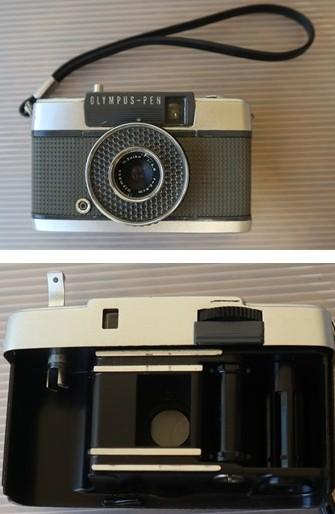
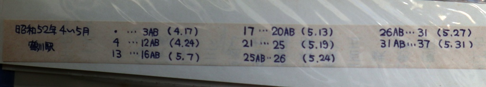
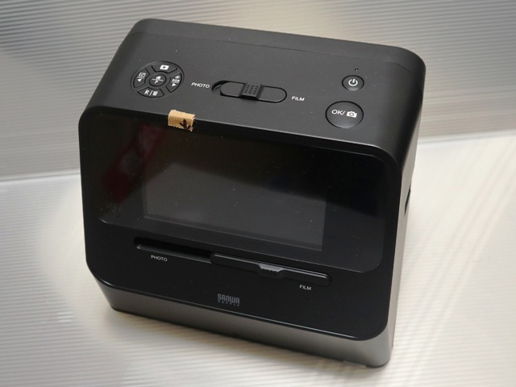
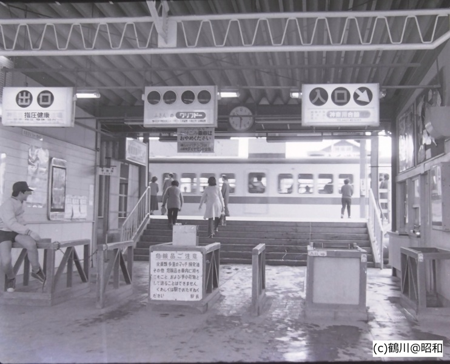

撮影
1977年、地元鶴川駅が大きく変貌する、といううわさを聞き、当時高校生だった私は「定点観察」による「工事記録」作成を思い立った。機材はオリンパスペンEEというハーフサイズのフィルムカメラ（36枚撮りで最大75枚ぐらい撮れた）。撮影時は、約30か所ぐらいの「定点」を意識。現像後のネガには「1～4AB 5/15」などコマ範囲の撮影日を必ず記入し、ネガを収納するホルダに入れて保管していた。


熟成
その後の進学、就職と幾多の引っ越しを経て45年以上もネガは埋もれ、ついに酢酸臭を放ち始めた。
デジタル化とX(twitter)での公開
2022年秋：「老後」に達する前の60代になって、「これが最後のチャンス」と感じ、終活の一環でデジタル化を敢行。

2024年3月：X(twitter)にアップし「1977年の鶴川駅改修＝待避線新設工事の頃を実況記録風に振り返る」を始めた。

GitHub上での公開
2025年8月：「1977年の鶴川駅待避線工事」を鶴川駅の利用者の共通の記憶として残すことを計画した。約700枚の画像を地図上の地点AAと撮影日YYYYMMDD、撮影方向X(N,NE,E,SE,S,SW,W,NWの8方位)、連番Bのファイル名YYYYMMDD-AA-X(-B).jpgで整理し、HP上で公開することを決めた。ChatGPTのサポートによりこのHPが完成、公開開始した（初回アップは2025/9/28, 公開開始は2025/10/2）。
著者について
昭和時代は鶴川在住、町田「おくぬし」に出没する模型鉄。現在も「小田急」が模型の主な対象。